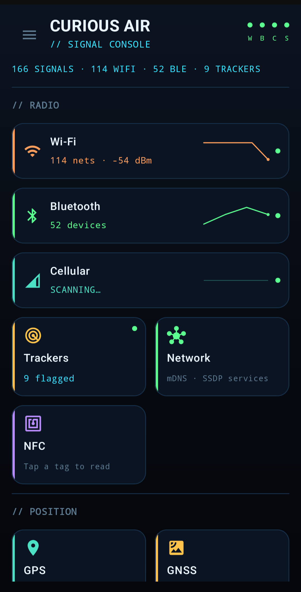
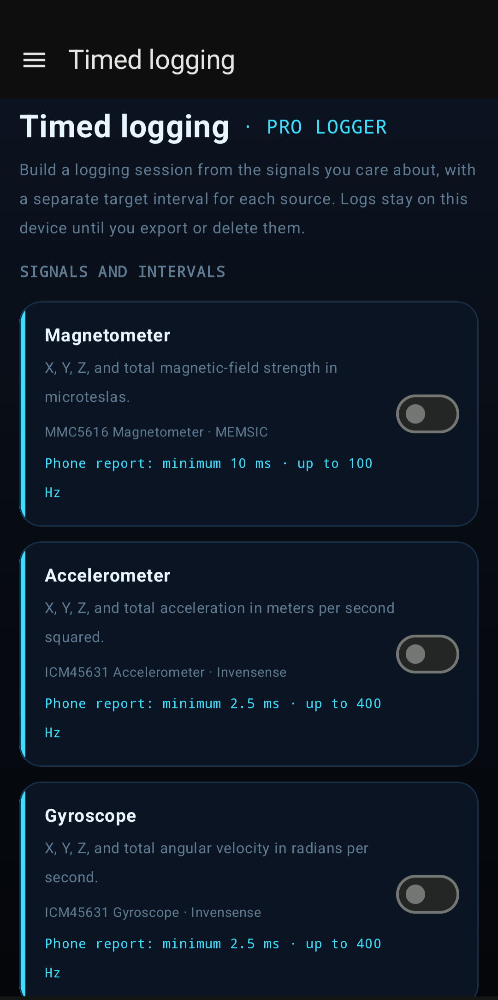

Your phone does the looking.
Signal data is not sent to Ulix unless you export or share it.
Turn your Android phone into a field console for the signals and sensors already around you: Wi-Fi, Bluetooth, cellular, satellites, NFC, light, motion, magnetic fields, audio, and more.

Signal data is not sent to Ulix unless you export or share it.
Grant only the radio and sensor access you want to use.
No Curious Air login, profile, feed, or cloud dashboard.
Core exploration is free. Pro adds timed CSV observations.
Curious Air does not collapse every reading into one mysterious score. Each radio, sensor, and experimental method gets its own console, its own units, and its own limits.
Inspect Wi-Fi channels, Bluetooth broadcasts, cellular cells, tracker-pattern signals, and discoverable services on your local network.
Read GPS fixes and explore the GNSS sky by constellation, elevation, azimuth, signal strength, and reported accuracy.
Use the sensors your device actually has for heading, tilt, acceleration, magnetic field, light, proximity, audio, and more.
The visual language borrows from field instruments: clear labels, stable lists, live plots, and enough context to understand what a number can and cannot tell you.
Inspect SSIDs, frequency, security, signal history, and channel placement. Filter the list when the air gets crowded.


Explore BLE devices by relative signal strength, inspect advertisements, decode manufacturer and service data, and connect to compatible GATT services.


Read heading, pitch, roll, acceleration, magnetic field, light, proximity, relative audio level, and altitude when the hardware is available.


Curious Air checks the hardware and Android access available on your device, then tells you what it can actually use. Unsupported sensors stay honest instead of becoming empty promises.

The app’s consoles and Bluetooth decoding remain useful without a purchase. Pro is for people who want timed observations they can take elsewhere.
Curious Air Pro unlocks timed logging and CSV export for Wi-Fi, Bluetooth, GNSS, and cellular observations. Choose an interval and duration, save through Android’s document picker, and analyze the file in the tool you prefer.

Signal strength moves. Phone hardware varies. Experimental indicators can be wrong. Curious Air explains those limits in the interface instead of hiding them in fine print.
Data remains on your device unless you export or share it. Local network discovery necessarily sends discovery probes on the network you are connected to, and Google Play communicates with Google to handle the optional Pro entitlement.
Camera indicators, inferred signals, tracker-pattern matches, and other Labs features are clues, not proof. They can miss real devices or flag harmless ones and should never be used for safety-critical decisions.
Curious Air gives you a respectful, local-first way to look.
Join the Google Play test